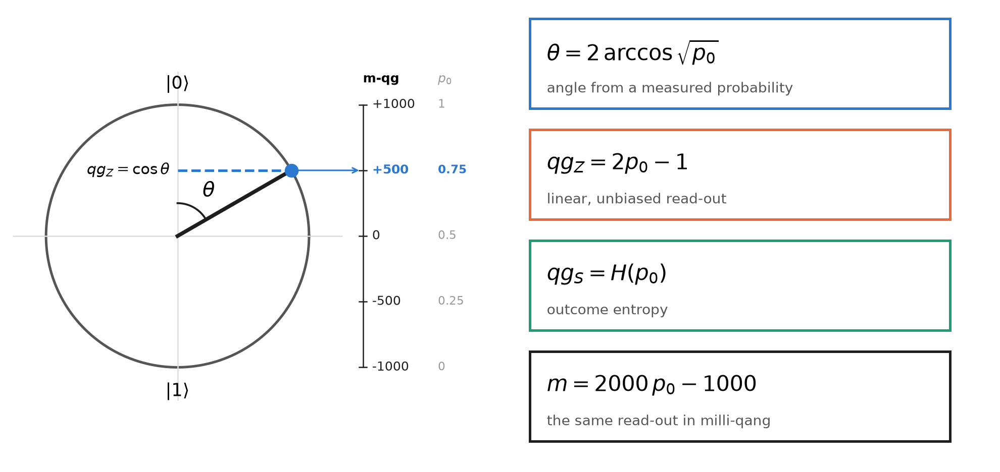
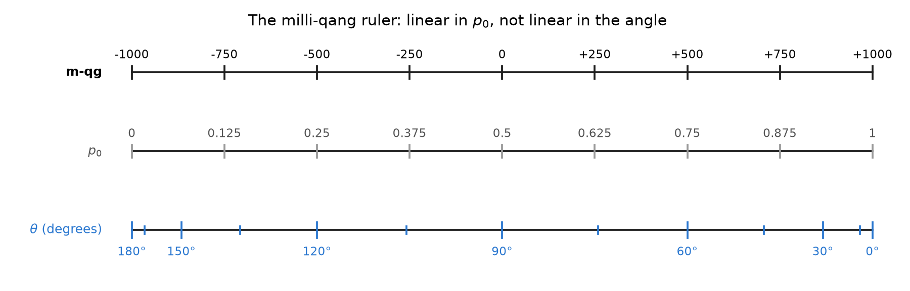
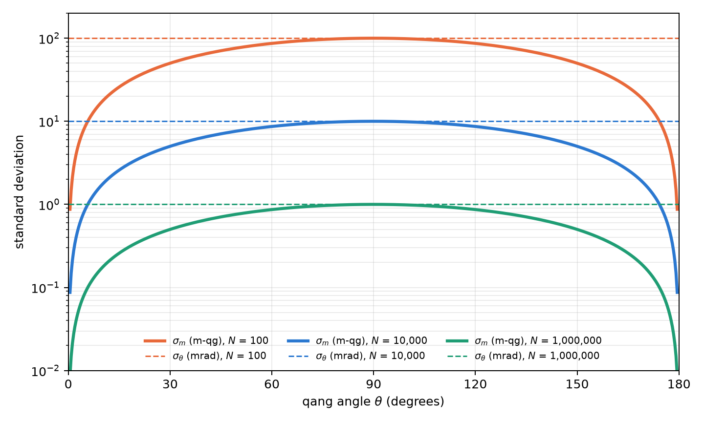
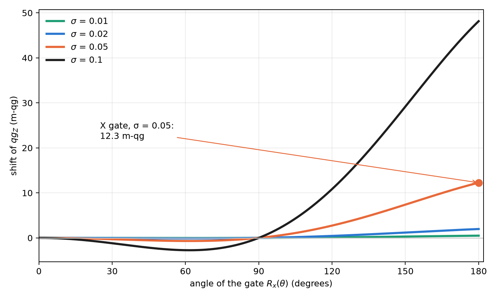
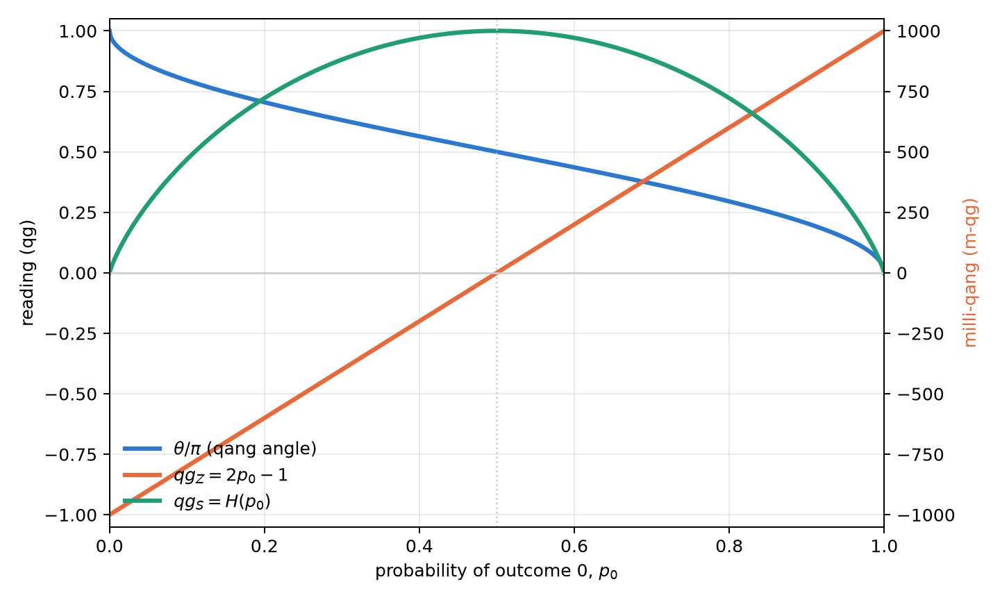
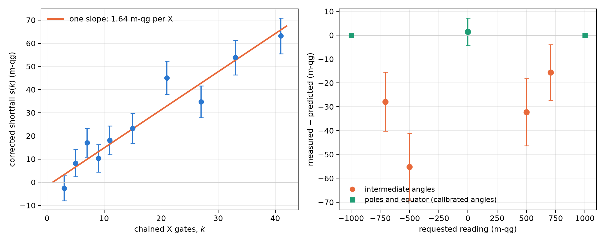

1 The qang unit: definition, milli-qang and the probability equation
A qubit is designed with angles and observed with frequencies. Whoever writes a circuit chooses rotations \(R_y(\theta)\); whoever runs it receives counts of zeros and ones. Between the two descriptions sits a trigonometric function that is rarely named, and that is the source of several practical difficulties: gradients that diverge, error bars that shrink or swell with the state, and parameters that cannot be read directly from the experiment. This chapter builds the foundation of the book in three steps: the definition of the qang unit (qg), the theory of the milli-qang (its submultiple) and the probability equation that ties both to what is measured. Every result is backed by a figure computed with the package itself (qang.probability, §167), so the figures and the text quote the same numbers.
1.1 Definition of the qang
Every pure state of a qubit can be written, up to a global phase, as
\[ |\psi\rangle = \cos\frac{\theta}{2}\,|0\rangle + e^{i\varphi}\sin\frac{\theta}{2}\,|1\rangle , \qquad \theta\in[0,\pi],\ \varphi\in[0,2\pi). \]
The pair \((\theta,\varphi)\) is a point on the Bloch sphere and is the natural way to prepare the state: a rotation \(R_y(\theta)\) followed by a phase \(R_z(\varphi)\). A measurement in the computational basis does not return \(\theta\): it returns, on each shot, the outcome 0 with probability
\[ p_0 = \cos^2\frac{\theta}{2}\qquad\text{(Born's rule).} \]
Definition. The qang unit takes as its primary coordinate the expectation value of \(\sigma_z\), called the polar bias:
\[ \boxed{\;qg_Z = \langle\sigma_z\rangle = p_0 - p_1 = 2p_0 - 1 = \cos\theta\;}\qquad qg_Z\in[-1,1]. \]
The other two readings of the unit come from the same probability: the qang angle \(\theta=\arccos(qg_Z)\in[0,\pi]\) and the superposition spread \(qg_S=H(p_0)\in[0,1]\), the Shannon entropy of the outcome (studied below). Figure 1.1 summarizes the definition: the point on the circle is the state, its projection on the vertical axis is \(qg_Z\), and the scale on the right gives the same reading in milli-qang and in probability.

Three properties make \(qg_Z\) a good working coordinate:
- It is a bijection. On \(\theta\in[0,\pi]\), \(\cos\theta\) is strictly decreasing and covers \([-1,1]\): each value of \(qg_Z\) corresponds to a single latitude of the sphere.
- It is directly measurable. \(\widehat{qg}_Z = (n_0-n_1)/N\) is the average of the \(\pm1\) outcomes of the shots; it needs no inversion and no fit.
- It holds for any state. For a mixed state, \(qg_Z = \operatorname{Tr}(\rho\,\sigma_z)\), which reduces to \(\cos\theta\) when \(\rho=|\psi\rangle\langle\psi|\) (§3).
The sign and range have an immediate physical reading: \(qg_Z=+1\) is the pole \(|0\rangle\), \(qg_Z=-1\) the pole \(|1\rangle\), and \(qg_Z=0\) any point of the equator, where the measurement outcome is maximally uncertain.
An engineering unit. A useful unit does not need to be a new physical quantity; it needs to make what is measured legible. The decibel adds no physics to power: it expresses it on a scale that makes the gains of a chain of amplifiers additive. The qang plays an analogous role for the qubit: it expresses its state on the scale in which the experiment delivers it, so that preparation, noise and read-out are compared in the same units. It is an operational convention, and like every convention it is worth what it simplifies.
1.2 Theory of the milli-qang
1.2.1 Definition and scale
The deviations that matter in a real qubit are small: calibration errors, drift, read-out noise. A submultiple is convenient to express them, the milli-qang (m-qg):
\[ 1\ \text{qg} = 1000\ \text{m-qg},\qquad m = 1000\,qg_Z\ \in[-1000,\,+1000]\ \text{m-qg}. \]
The scale runs from \(-1000\) m-qg at the pole \(|1\rangle\) to \(+1000\) m-qg at the pole \(|0\rangle\), with zero on the equator. A state with \(qg_Z=0.5018\) sits at \(501.8\) m-qg; its difference from the ideal \(0.5\) is \(1.8\) m-qg. The same definition holds for the other axes, \(qg_X\) and \(qg_Y\), so the whole Bloch vector can be expressed in m-qg.
1.2.2 Linear in probability, not linear in angle
Since \(qg_Z=2p_0-1\), the milli-qang is linear in probability: one m-qg is always \(\Delta p_0=0.0005\), that is, 0.05 percentage points, anywhere on the scale. It is not linear in angle:
\[ \frac{dm}{d\theta} = -1000\,\sin\theta \qquad\Longrightarrow\qquad \Delta\theta \approx \frac{1}{1000\,\sin\theta}\ \text{rad per m-qg}. \]
On the equator (\(\theta=90^\circ\)) one m-qg is exactly one milliradian; at \(\theta=30^\circ\) it is two. Near a pole the linear relation fails and the exact one must be used: a state \(\delta\) m-qg below the pole \(|0\rangle\) makes with it the angle
\[ \theta_\delta = \arccos\!\left(1-\frac{\delta}{1000}\right)\approx\sqrt{\frac{2\delta}{1000}} . \]
One m-qg from the pole is \(0.0447\) rad (\(2.56^\circ\)); ten m-qg, \(8.1^\circ\). Figure 1.2 shows the consequence: on the milli-qang ruler the probability marks are evenly spaced and the angle marks crowd at the poles. That is why the unit is defined on probability and not on angle: it is the scale in which the instrument delivers the data.

1.2.3 Resolution from shots
With \(N\) shots, \(\widehat{qg}_Z\) has variance \(\sin^2\theta/N\) (derived in the arcsine section), so the standard deviation of the reading in milli-qang is
\[ \sigma_m = \frac{1000\,\sin\theta}{\sqrt N}\ \text{m-qg}, \qquad N_\delta = \left(\frac{1000\,\sin\theta}{\delta}\right)^{2} \]
where \(N_\delta\) is the number of shots needed to resolve \(\delta\) m-qg at one sigma. On the equator, resolving 10 m-qg takes \(10^4\) shots and resolving 1 m-qg, \(10^6\). At \(60^\circ\) and 1000 shots, \(\sigma_m=27.4\) m-qg; to get down to 5 m-qg at that point takes 30,000 shots. Figure 1.3 compares \(\sigma_m\) with the uncertainty of the angle, \(\sigma_\theta=1/\sqrt N\): the m-qg reading is more precise near the poles, and the angle’s is the same all around the circle. The two curves touch on the equator, where one m-qg is one milliradian.

1.2.4 Gate error budget
The scale lets a gate error be expressed in the same units as the read-out. If the amplitude of a pulse has a random relative error of standard deviation \(\sigma\), the expected polar bias after \(R_x(\theta)\) is
\[ \mathbb E[qg_Z] = \cos\theta\; e^{-\theta^2\sigma^2/2} \qquad\Longrightarrow\qquad \varepsilon_m = 1000\cos\theta\left(e^{-\theta^2\sigma^2/2}-1\right)\ \text{m-qg} \]
(§160). The error pulls the reading towards the equator: with \(\sigma=0.05\), an \(X\) gate (\(\theta=\pi\)) delivers \(qg_Z=-0.988\) instead of \(-1\), a shift of \(12.3\) m-qg. At multiples of \(\pi\) the shift grows with the square of the angle, always towards the equator; in general it goes as \(\theta^2\cos\theta\) (Figure 1.4). A \(\pi/2\) rotation does not shift at all, because it already sits on the equator. Chapter 2 uses this formula to choose, among equivalent representations of the same gate, the one with the smallest pulse area.

1.3 The probability equation of the qang and the milli-qang
The previous sections lead to a single statement, which is the foundation of the whole book: every qang reading of a qubit is an exact function of a single probability, \(p_0\):
\[ \boxed{\; \theta = 2\arccos\sqrt{p_0},\qquad qg_Z = 2p_0-1,\qquad qg_S = H(p_0),\qquad m = 2000\,p_0-1000\ \text{m-qg} \;} \]
and, in the other direction, the probability equation of the milli-qang:
\[ p_0 = \frac{1000+m}{2000},\qquad \theta = \arccos\frac{m}{1000}. \]
There are no approximations: they are four readings of one number. Figure 1.5 shows them together. \(qg_Z\) and the milli-qang are the same straight line on two scales; the angle is monotonic but steepens at the poles; the entropy rises up to the equator and falls again, which is why it needs a branch to be inverted. Table 1.1 gives the reference values.

| \(\theta\) | \(p_0\) | \(qg_Z\) | m-qg | state |
|---|---|---|---|---|
| \(0\) | \(1\) | \(+1\) | \(+1000\) | pole \(\vert{}0\rangle\) |
| \(\pi/4\) | \(0.854\) | \(+0.707\) | \(+707\) | |
| \(\pi/3\) | \(0.75\) | \(+0.5\) | \(+500\) | |
| \(\pi/2\) | \(0.5\) | \(0\) | \(0\) | equator (\(\vert{}+\rangle\), \(\vert{}{+i}\rangle\), …) |
| \(2\pi/3\) | \(0.25\) | \(-0.5\) | \(-500\) | |
| \(\pi\) | \(0\) | \(-1\) | \(-1000\) | pole \(\vert{}1\rangle\) |
1.3.1 More than two outcomes: the statistical distance
The equation generalizes to a measurement with several outcomes. For two distributions \(p=(p_k)\) and \(q=(q_k)\), Wootters’ statistical distance (1981), or Bhattacharyya angle (Bhattacharyya 1943), is
\[ d(p,q) = \arccos\sum_k\sqrt{p_k\,q_k}. \]
For two outcomes, the distance between \((p_0,1-p_0)\) and the pole \((1,0)\) is \(\arccos\sqrt{p_0}=\theta/2\): up to the factor 2, the qang angle is the statistical distance between what is measured and the reference state. With three outcomes, for example, \(p=(0.5, 0.3, 0.2)\) and \(q=(0.4, 0.4, 0.2)\) are \(0.113\) rad apart. This is the door through which the unit leaves the qubit: Part II uses it for the Fisher information and the Fubini–Study metric, and the same geometry holds for any measured proportion, quantum or not.
1.4 Why measure in qg: the geometry–probability gap
The relation \(p_0=\cos^2(\theta/2)\) between the control parameter and the observed quantity is non-linear, and its derivative vanishes at the poles. This has concrete consequences. If a variational algorithm wants to adjust the state according to what it measures, the chain rule introduces the factor
\[ \frac{dE}{dq} = -\frac{1}{\sin\theta}\,\frac{dE}{d\theta}, \]
which diverges at \(\theta=0\) and \(\theta=\pi\) (research notes, §1). And if \(\theta\) is to be estimated from \(N\) shots, the variance of \(\hat p_0\) changes with the state, so the uncertainty of each reading depends on where the qubit is (§5). Neither problem is exotic: both appear as soon as one reasons in terms of what the experiment delivers, and the probability equation is the tool to handle them.
1.5 Inversion and the branch sign
The angle is recovered with \(\theta=\arccos(qg_Z)\). The inversion has a limit: \(\cos\theta\) is even, so \(qg_Z\) does not distinguish \(\theta\) from \(-\theta\). As long as one works on \([0,\pi]\) there is no problem, but an optimizer that needs to cross a pole gets stuck. The remedy is to measure the sign of the sine as well: the pair \((qg_Z, s)\) with \(s=\operatorname{sign}(qg_X)\) is one-to-one on the whole circle (§65). In the H₂ molecule the variational optimum is at \(\theta\approx-0.22\); every update that uses only \(qg_Z\) stops at the Hartree–Fock state, while the signed version reaches the exact energy.
1.6 The outcome entropy: \(qg_S\)
The polar bias says where the qubit points; it does not say how unpredictable the measurement is. That is the role of the superposition spread, the Shannon entropy of the outcome:
\[ qg_S = H(p_0) = -p_0\log_2 p_0 - (1-p_0)\log_2(1-p_0) \in [0,1]. \]
Since \(qg_Z\) and \(qg_S\) depend on the same population \(p_0\), they are tied by an exact, branch-free identity (§7):
\[ qg_S = H\!\left(\frac{1+qg_Z}{2}\right), \]
valid for every single-qubit state, pure or mixed, however it was prepared. Its derivative, \(\tfrac{d\,qg_S}{d\,qg_Z}=\tfrac12\log_2\tfrac{1-qg_Z}{1+qg_Z}\), diverges at the poles: it is the entropic counterpart of the gradient singularity. Near a pole, a minimal change of the bias produces an enormous relative change of the entropy.
1.7 Invertibility of \(qg_S\) and its error bars
Unlike \(qg_Z\), the entropy is not invertible over the whole domain: \(qg_S(\theta)=qg_S(\pi-\theta)\). The population \(p_0\) decreases from 1 to 0 on \([0,\pi]\) and \(H\) rises up to \(p=\tfrac12\) and then falls, so \(qg_S\) is strictly increasing on \([0,\pi/2]\) and strictly decreasing on \([\pi/2,\pi]\) (Figure 1.5). Inversion requires choosing one of the two halves (§2).
Estimating \(qg_S\) from finite shots raises a further problem: the entropy is flat at its maximum, and the delta method gives a zero standard error exactly where \(qg_S\approx1\). The native qang solution is to build the Wilson interval for \(qg_Z\) and map it through the identity above; since \(H\) is unimodal, the image is a valid interval. Over 2000 repetitions that interval kept a coverage of 0.90–0.99 in every case tested, even where the Wald interval or the bootstrap fell below 0.40 (§51).
1.8 The qang angle as the arcsine transformation
The central statistical property of the unit follows from propagating shot noise. With \(\widehat{qg}_Z = 2\hat p_0-1\),
\[ \operatorname{Var}(\widehat{qg}_Z)=\frac{\sin^2\theta}{N}, \qquad \operatorname{Var}(\hat\theta)\approx \operatorname{Var}(\widehat{qg}_Z)\left(\frac{d\theta}{d\,qg_Z}\right)^2 =\frac{\sin^2\theta}{N}\cdot\frac{1}{\sin^2\theta}=\frac1N . \]
The \(\sin^2\theta\) factors cancel exactly: the uncertainty of the qang angle does not depend on the state (§5), which is the horizontal dashed line of Figure 1.3. It is not a coincidence. Since \(p_0=\cos^2(\theta/2)\), the qang angle is, up to the reflection \(\theta\to\pi-\theta\), the classical arcsine transformation of a proportion, \(\phi=2\arcsin\sqrt p\), introduced by Bartlett (1947), Anscombe (1948) and Freeman and Tukey (1950) precisely to stabilize the variance (§125).
The claim was checked with exact binomial sums, without simulation: with \(n=100\), \((n+\tfrac12)\operatorname{Var} (\hat\theta)\) lies between 1.000 and 1.001; the coverage of the interval \(\hat\theta\pm z/\sqrt{n+1/2}\) stays between 0.930 and 0.962 for \(n\in\{30,100,1000\}\). The prediction failed in one case, and it is worth saying: with \(np\approx2.5\) both the angular and the Wald intervals lose coverage. The stabilization is asymptotic, and the regime of very few events requires the exact intervals of chapter 4.
1.9 Mixed states and multi-qubit registers
The definitions extend unchanged to mixed states and to registers:
- Mixed states. \(qg_Z=\operatorname{Tr}(\rho\sigma_z)\) no longer determines the state. The classical mixture of \(|0\rangle\) with weight 0.2 and \(|1\rangle\) with weight 0.8 has \(qg_Z=-0.6\) and von Neumann entropy 0.72, a combination no pure state reproduces (§3). The qang angle \(\theta=\arccos qg_Z\) is still a function of \(p_0\), so it keeps \(\operatorname{Var}(\hat\theta)=1/N\) here too: the probability does not know whether the state is pure. What loses the stabilization is the estimate of the Bloch polar angle, \(\arccos(qg_Z/r)\), of a qubit of length \(r<1\): \(\operatorname{Var}=\big[1+\tfrac{1-r^2}{r^2\sin^2\theta}\big]/N\), equal to the quantum Cramér–Rao bound \(1/(Nr^2)\) on the equator (§45).
- Registers. Each qubit has its local profile, obtained by partial trace, and the register has a joint entropy normalized by the number of qubits (§4). The Bell state illustrates it: each qubit has \(qg_Z=0\) and a local entropy of 1 bit, but the normalized joint Shannon entropy of the outcomes is 0.5 (the von Neumann entropy of the register is 0). The register is globally pure and locally mixed; the local profiles are not enough to describe it, and chapter 5 returns to this point with the Bloch radius.
1.10 Scope and limits of the base
It is worth stating precisely what this base brings and what it does not, before building the rest of the book on it.
What it is not. The qang unit is not new physics. The polar bias is the expectation value of \(\sigma_z\), the qang angle is the arcsine transformation of a proportion and the milli-qang is, mathematically, \(1000\,\langle\sigma_z\rangle\). None of these readings holds information that the probability \(p_0\) does not already have; the probability equation says so explicitly. Nor does it reduce the shots a given precision requires (Chapter 4).
What it is. A working scale, in the sense of the decibel: it puts preparation, gate error, shot noise and read-out in the same units, so that they add, compare and can be budgeted. The question that matters is then empirical: does reasoning in milli-qang predict what a real processor does?
First test on hardware (§168). It was answered with a pre-registered experiment on one qubit of IQM’s superconducting Garnet processor: 26 circuits of 4000 shots, with four predictions fixed before the run. The result was mixed, and it is reported in full:
- The cost of a gate is measurable and budgetable in m-qg. Chaining 3 to 41 \(X\) gates, the shortfall of the reading (corrected for the readout errors measured at the poles) grows with a single slope: 1.64 m-qg per \(X\) gate, with a \(\chi^2\) per degree of freedom of 0.81. After 41 gates it is 63 m-qg, eight standard deviations above zero (Figure 1.6, left). Linear rather than quadratic growth points to incoherent error, relaxation during the pulses, and not to a coherent over-rotation.
- The scale makes visible an error that the readout model hides. The affine readout predicted from the poles fits at the equator, but the four intermediate angles read between 16 and 55 m-qg low (Figure 1.6, right). The processor calibrates the angles \(0\), \(\pi/2\) and \(\pi\) well; the others are over-rotated by \(1.3^\circ\) to \(3.9^\circ\). The prediction passed by the 4-of-5 rule, not cleanly.
- One prediction failed. The ten copies of the equator circuit scattered half as much as binomial shot noise allows, something independent shots cannot produce and which happens by chance with probability 0.013. A single run does not decide whether it was a fluke or a property of how the device returns batched circuits.
- Another prediction was badly designed. Fitting two parameters on four points left an extrapolation band so wide that any reading passed. It is recorded as a design flaw, not as a success.

The balance: on a real chip, the milli-qang turned the error of a gate into a budgetable number and exposed an angle error that the usual model does not see. But it was tested on one qubit, once, and shot noise did not describe the scatter of repeated circuits. Replication on more qubits and on another day is pending, and the book treats this base as solid mathematically and promising, but not yet consolidated, experimentally.
1.11 Without qang and with qang
| action | without qang | with qang | difference |
|---|---|---|---|
| describe the outcome of a qubit | the probability \(p_0\) (or \(\langle Z\rangle\)) | \(qg_Z\), the angle \(\theta\), \(m\) and \(qg_S\), all exact functions of \(p_0\) | none in content: the same information; qang gives it a working scale from \(-1000\) to \(+1000\) |
| error bar of a reading | \(\sqrt{p_0(1-p_0)/N}\), different for each state | the angle has variance \(1/N\) for every state; in m-qg, \(1000\sin\theta/\sqrt N\) | convenience: the variance-stabilized coordinate of classical statistics (the arcsine) is the gate parameter |
| compare a gate error with shot noise | infidelity on one side, binomial deviation on the other, in different units | both in m-qg (on Garnet, 1.64 m-qg per \(X\) gate against the run’s shot noise) | in favour: one scale for the error budget |
| improve the device | — | — | none: the scale measures, it does not correct; prediction M2 of §168 failed |
Balance. The base adds no information to \(p_0\): it reorganizes it. What it gains is a uniform error bar in the angle and a common unit for gate errors and shot noise, which are exactly the two things the rest of the book uses.
1.12 In code
The qang.probability module is this chapter’s analysis tool: it reads counts and returns every reading, each with its interval.
import math
from qang import probability as pb
pb.readings_from_p0(0.75) # theta = 1.047 (60°), qg_Z = 0.5, qg_S = 0.811, 500 m-qg
# 750 zeros in 1000 shots, against a target qg_Z = 0.5
r = pb.analyze(750, 1000, target_qg_z=0.5)
r.milliqang # (500.0, 444.5, 551.7) m-qg: estimate and Wilson interval
r.theta # (1.047, 0.986, 1.110) rad = 60.0°, 56.5°, 63.6°
r.qg_s # (0.811, 0.768, 0.852)
r.deviation_milliqang # 0.0 m-qg from the target
pb.angle_per_milliqang(math.pi / 2) # 0.001 rad: one m-qg is one milliradian on the equator
pb.pole_angle(1.0) # 0.0447 rad: one m-qg below the pole
pb.shots_for_resolution(10, math.pi / 2) # 10000 shots to resolve 10 m-qg
pb.pulse_error_milliqang(math.pi, 0.05) # 12.3 m-qg: X gate with a 5 % amplitude error
pb.statistical_angle([0.5, 0.3, 0.2], [0.4, 0.4, 0.2]) # 0.113 radThe figures of this chapter are generated by tools/make_cap01_figures.py, which uses the same functions.
1.13 Summary
- Definition. The polar bias \(qg_Z=\langle\sigma_z\rangle=2p_0-1=\cos\theta\) is bijective, directly measurable and valid for mixed states; the qang angle \(\theta=\arccos qg_Z\) and the entropy \(qg_S=H(p_0)\) complete the unit.
- Milli-qang. \(1\ \text{qg}=1000\) m-qg; the scale is linear in probability (1 m-qg \(=\Delta p_0=0.0005\)) and not linear in angle (1 mrad on the equator, \(2.56^\circ\) next to the pole). Resolving \(\delta\) m-qg takes \((1000\sin\theta/\delta)^2\) shots, and gate errors are budgeted in the same units.
- Probability equation. \(\theta\), \(qg_Z\), \(qg_S\) and \(m\) are exact functions of a single probability \(p_0\); with several outcomes, the qang angle generalizes to Wootters’ statistical distance.
- Statistics. The qang angle is the arcsine transformation of a proportion: its variance is \(1/N\) for every state, pure or mixed; what needs a correction in a mixed state is the estimate of the Bloch angle.
- Scope. The unit is not new physics but a working scale. On real hardware (§168) it measured a cost of 1.64 m-qg per \(X\) gate, linear in the number of gates, and exposed reading shifts of 16–55 m-qg (over-rotations of \(1.3^\circ\)–\(3.9^\circ\)); a prediction about shot noise failed and replication is pending.
Bibliographic notes
The Born rule (Born 1926) and the Bloch sphere (Bloch 1946) are the starting point; for states, measurements and channels in general, see Nielsen and Chuang (2010). Wootters’ statistical distance (1981) and its relation to Fisher information are in Braunstein and Caves (1994); the Cramér–Rao bound, in Cramér (1946) and Rao (1945). The arcsine transformation that stabilizes the binomial variance comes from Bartlett (1947), Anscombe (1948) and Freeman and Tukey (1950), and the score interval is that of Wilson (1927). The binary entropy behind \(qg_S\) is that of Shannon (1948). The numbered research notes (§) cited in this chapter and the scripts that check it are in the repository (Monteverde 2026a); the definition of the qang unit is in Monteverde (2026b).